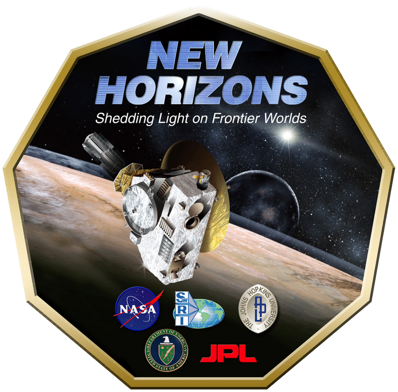
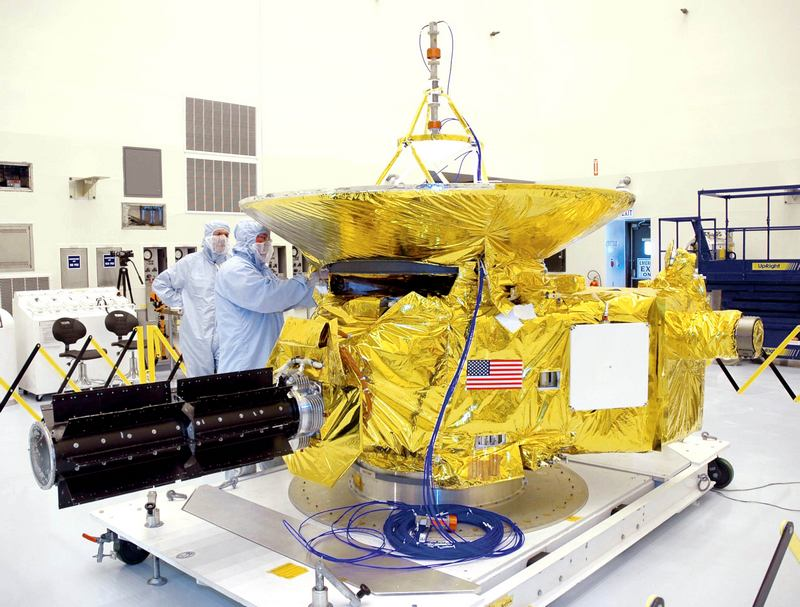

von Marcus Haas

New Horizons – Logo (© NASA)
(mh) – Ob Pluto ein Planet ist oder nicht, mag diskutiert werden. Dass die Mission zu ihm eine technische Meisterleistung ist wohl kaum. In knapp drei Monaten wird die Raumsonde New Horizons Pluto erreichen, nach fast zehnjähriger Reise.
Das erste Foto des Kleinplaneten und seines Mondes Charon erreichte uns Anfang April. Nur verschwommene Flecken vor dunklem Hintergrund und trotzdem ein Grund zur Freude bei den Wissenschaftlern. Mit gutem Grund, denn bisher stammen die einzigen Aufnahmen von erdbasierten Teleskopen. Mit New Horizons wird das erste Mal in der Geschichte eine Sonde an Pluto vorbeifliegen und Aufnahmen von dem Himmelkörper und seinen mindestens fünf Monden zur Erde schicken.
Pluto ist der größte bekannte Körper im Kuiper-Gürtel. Das ist eine Wolke vom Gesteinsbrocken außerhalb der Umlaufbahn von Neptun. Etwa 30 bis 50 Astronomische Einheiten (AE) von der Sonne (eine AE entspricht dem Abstand zwischen Sonne und Erde) entfernt, besteht der Kuiper Gürtel aus schätzungsweise über 70.000 Objekten von mehr als 100 km Durchmesser und einer unbekannten Anzahl kleiner Körper. Man vermutet, dass viele Kometen aus dem Kuiper-Gürtel stammen. 1930 war Pluto das erste Objekt, das man heute zu dieser Ansammlung von Himmelskörpern zählt.
Dabei ist der Kuiper-Gürtel die dritte von drei Zonen in die man unser Sonnensystem unterteilt. Wobei die erste Zone die Gesteinsplaneten umfasst und die zweite die Gasriesen.
Bisher ist das Wissen über Pluto und Charon sehr begrenzt. Man weiß, dass Pluto eine Stickstoffatmosphäre hat, Jahreszeiten. Höchstwahrscheinlich einen Kern aus Eis und wenigstens fünf Monde, nur Charon war bekannt, als man 2001 mit der Planung für New Horizons begann. Die weiteren Monde wurden erst ab 2005 durch das Hubble-Weltraumteleskop entdeckt.
Es gibt also noch viel zu lernen und zu entdecken. Und deshalb startete New Horizons am 19. Januar 2006 um 20:00 Uhr MEZ an Bord einer Atlas 551-Rakete von Cape Canaveral. Derzeit nähert sich die Raumsonde ihrem Ziel mit fast 14 km/s und ist damit die schnellste bisher gebaute Raumsonde. Nach dem Start waren es sogar 16 km/s und damit passierte die Sonde die Umlaufbahn des Mondes in nur 8 Stunden. Wenn die Sonde im Juli 2015 ihr Ziel erreicht wird sie Pluto in einer Entfernung von nur 9000 km passieren und an Charon mit einer Distanz von etwa 27000 km vorbeifliegen.
Ziel ist es, den Zwergplaneten zu erreichen, bevor seine Atmosphäre gefriert, erst 2247 kommt Pluto wieder in Sonnennähe und man schätzt, dass in weniger als 20 Jahren die Gase ausgefroren seien werden. Viel später hatte die Mission also nicht starten dürfen. Da Signale von der Bodenstation fast vier Stunden brauchen, um die Sonde zu erreichen, wird der Vorbeiflug im Wesentlichen autonom durchgeführt. Die gesammelten Daten werden an Bord der Sonde gespeichert und in den Tagen und Wochen nach dem Vorbeiflug zur Erde gefunkt.

Die Sonde New Horizons in der Montagehalle (© NASA)
Doch Pluto ist nicht das Ende der New Horizons Mission. Zwischen 2016 und 2020 sollen noch wenigstens zwei weitere Objekte im Kuiper-Gürtel untersucht werden.
Jenseits der Gesteinsplaneten ist die Sonde zu weit von der Sonne entfernt, um noch mit Hilfe von Solarzellen mit Energie versorgt zu werden. Wie die Voyager Sonden zuvor wird New Horizons deshalb durch einen Radioisotopengenerator mit Strom versorgt. 10,9 kg Plutonium genügen dabei, das Raumschiff bis zum Jahre 2025 mit Energie zu beliefern. Außerdem hat die Sonde 77 kg Hydrazin an Bord, um eventuell erforderliche Kurskorrekturen vornehmen zu können, vor allem aber um nach dem Plutovorbeiflug noch andere Objekte im Kuiper-Gürtel ansteuern zu können.
Für ihre Untersuchungen ist die Sonde mit sechs Instrumenten ausgerüstet. Einem kleinen Spiegelteleskop von 6 cm Durchmesser. Dieses soll Aufnahmen mit einer Auflösung von bis zu 250 m/Pixel von der Pluto-Oberfläche machen. Ein Ultraviolett-Spektrometer ist an Bord um die Zusammensetzung der Atmosphäre zu untersuchen. Weiterhin eine hochauflösende Kamera, die Objekte bis hinunter von 50 m zeigen soll. Außerdem ein Radiowellenexperiment, ebenfalls für atmosphärische Untersuchungen, ein Instrument zur Detektion von geladenen Teilchen und zur Bestimmung eines eventuell vorhandenen Magnetfelds. Außerdem befindet sich ein Ionen- und Elektronenspektrometer an Bord.
Weiterführende Informationen zum Thema:
http://pluto.jhuapl.edu/ - New Horizons – NASA’s Mission to Pluto
http://www.bernd-leitenberger.de/new-horizons3.shtml - New Horizons - Die Mission